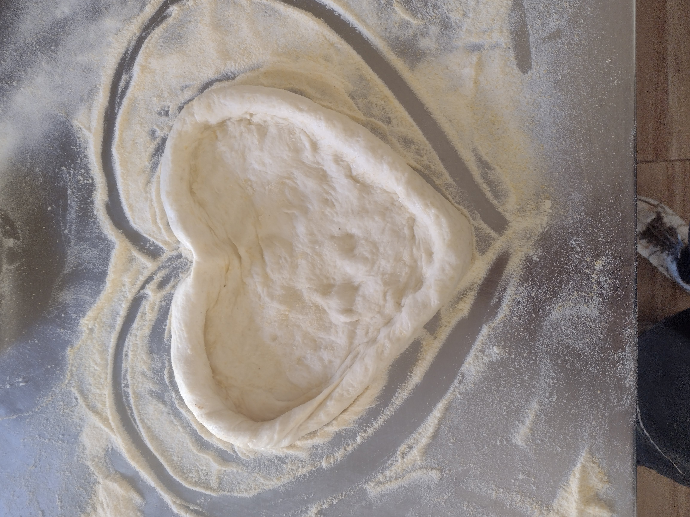
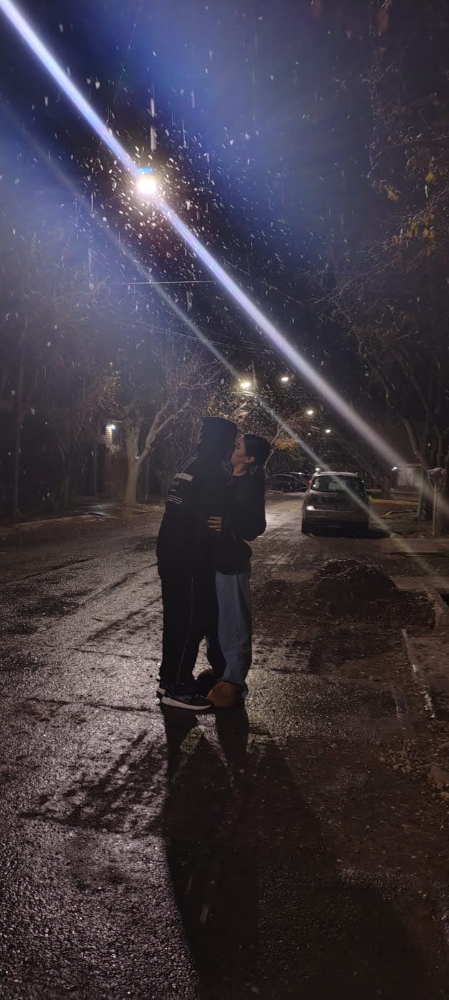

AGUANTE LA SOL Y TE EXPLICO PORQUE


Me puse a pensar en nosotros y es una locura todo lo que vivimos, falta nada para el 1 de mayo y ya vamos a cumplir un año, y pensar que al principio te hiciste la difícil como 3 meses 😏 pero yo ya sabía que tenía que intentar porque desde la primera vez que te vi algo me pasó, quería ser mejor por vos, y entre todas las pijamadas, las risas y esos momentos simples que terminan siendo los más importantes, me doy cuenta de lo mucho que te amo y de lo bien que me hace tenerte en mi vida, porque aunque alguna vez peleamos nunca fue más fuerte que lo que sentimos, así que gracias por ser mi compañera en todo, y si esto fue solo el primer año, no me quiero perder nada de lo que viene con vos ❤️